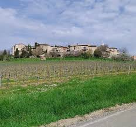

Cahuzac
sur-Vère


⟹ Villages & Châteaux du Gaillacois ⟸
Niché au cœur de la vallée de la Vère, le territoire de Cahuzac-sur-Vère est occupé depuis la Préhistoire : un dolmen est encore visible sur les rives du ruisseau d'Istricou. À l'Antiquité, une voie romaine reliant Rodez à Toulouse traverse le site, dont témoignent les vestiges d'une villa gallo-romaine au lieu-dit de Granejouls. Le nom même de Cahuzac serait d'origine romaine.

Le village se développe autour d'un château aujourd'hui disparu et d'une modeste chapelle de bois et de torchis datant du VIIIe siècle, remplacée au XIe siècle par un édifice de pierre dédié à saint Pierre. En 1212, en pleine croisade contre les Albigeois, Simon de Montfort s'empare du château de Cahuzac après plusieurs jours de siège, avant de poursuivre ses conquêtes dans la vallée du Cérou.
La guerre de Cent Ans, puis les guerres de Religion au XVIe siècle, ravagent à nouveau le bourg et ses hameaux. Non loin, les châteaux de Mauriac et de Salettes, situés à moins d'un kilomètre l'un de l'autre, se font alors face en gardant la trace de ces affrontements entre catholiques et protestants. Le XIXe siècle marque une période de reconstruction : nouvelle église, fours à chaux et tuileries redonnent vie au village.
Aujourd'hui, Cahuzac-sur-Vère cultive un art de vivre tranquille entre vignes du vignoble de Gaillac, coteaux et pigeonniers restaurés, dans un paysage préservé propice à la randonnée.
Gaillac : à une dizaine de kilomètres, le cœur historique du vignoble et l'abbaye Saint-Michel.
Cordes-sur-Ciel : cité médiévale perchée, incontournable à proximité.
Senouillac : commune voisine abritant le château de Mauriac.
Château de Salettes : spa et restaurant ouverts aux visiteurs, même hors séjour.
Château de Mauriac : visites guidées l'après-midi (environ 1h), escaliers uniquement, pas d'accès PMR aux étages.
Sentiers de randonnée au départ du centre du village, entre 3 circuits balisés.
Accès : à environ 12 km de Gaillac, au cœur du triangle d'or Albi-Gaillac-Cordes.